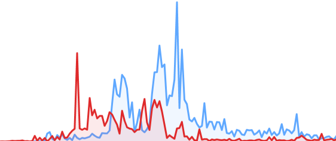

2012
Wikistream
Wikistream is a Node.js webapp for helping visualize current editing activity in Wikipedia. It uses Node.js, socket.io and Redis to sit in the wikimedia IRC chat rooms (where updates are published), and makes them available on the Web in realtime.
This project is awesome
Etiam mollis auctor quam, nec eleifend risus convallis sed. Nam ante purus, dictum vel lobortis ut, pharetra vitae nisl. Suspendisse bibendum ante a consectetur sodales. Nunc sed scelerisque ante. Vivamus ut eros eget risus malesuada eleifend id non odio. Proin dolor felis, tempus ut justo et, facilisis congue est. Morbi molestie magna nec nisl mollis, eget cursus risus mollis. Duis sit amet nulla lacus. Sed ornare convallis tellus non tincidunt.
Vestibulum lectus ligula, ultricies quis iaculis eleifend, molestie ut mauris. Vestibulum interdum leo vel fringilla pellentesque. Fusce vel neque nibh. Ut eget dapibus tortor, sed consequat purus. Integer rhoncus ultrices lacus accumsan sollicitudin. Nullam nec turpis id augue laoreet imperdiet. Duis vitae lorem ut ligula feugiat eleifend ac et lacus. Pellentesque interdum dui ac ipsum venenatis, eu tincidunt est commodo. Nulla sollicitudin ultrices purus, et egestas ante convallis non. Duis vel condimentum nisl, at rutrum magna. Vestibulum luctus tristique viverra. Curabitur vitae facilisis quam, et euismod mi. Nulla tincidunt viverra risus, et placerat mi varius non. Cum sociis natoque penatibus et magnis dis parturient montes, nascetur ridiculus mus. Aliquam non diam eros.
A table:
| First Header | Second Header |
|---|---|
| Content Cell | Content Cell |
| Content Cell | Content Cell |
Code:
require 'redcarpet' markdown = Redcarpet.new("Hello World!") puts markdown.to_html